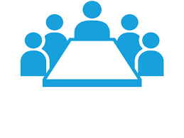

First Committee

The First Committee deals with disarmament, global challenges and threats to peace that affect the international
community and seeks out solutions to the challenges in the international security regime.
It considers all disarmament and international security matters within the scope of the Charter or relating to the
powers and functions of any other organ of the United Nations; the general principles of cooperation in the
maintenance of international peace and security, as well as principles governing disarmament and the regulation of
armaments; promotion of cooperative arrangements and measures aimed at strengthening stability through lower levels
of armaments.
The Committee works in close cooperation with the United Nations Disarmament Commission and the Geneva-based
Conference on Disarmament. It is the only Main Committee of the General Assembly entitled to verbatim records
coverage.
The First Committee sessions are structured into three distinctive stages:
- General debate
- Thematic discussions
- Action on drafts
It is the only Main Committee of the General Assembly entitled to verbatim records coverage pursuant to Rule 58 (a)
of the rules of procedure of the General Assembly.
Working Methods
Over the years, efforts have been made to rationalize the work of the Committee, concentrating on rearranging its
agenda and improving its organization of work (see resolution 42/42 [N] of 30 November 1987).
During the 48th session of the Assembly, in 1993, the item entitled “Rationalization of the work and reform of the
agenda of the First Committee” was included in the agenda of the Assembly. Thereafter, the Assembly has focused on
improving the effectiveness of the methods of work of the First Committee (see resolutions 48/87 of 16 December
1993, 49/85 of 15 December 1994, 57/300 of 20 December 2002, 58/41 of 8 December 2003, 58/126 of 19 December 2003,
58/316 of 1 July 2004 and 59/95 of 3 December 2004).
During the 59th session, in response to a request of the Secretary-General to seek the views of Member States on
improving the effectiveness of the methods of work of the First Committee, a report compiling those views was
submitted by the Secretariat (see A/59/132 and addenda 1 to 6).
Since the 60th session, under the item “Revitalization of the work of the General Assembly”, the Committee has
adopted its programme of work and timetable for the forthcoming session. Please also see the note by the Secretariat
(A/C.1/68/INF/4).
Landmark Documents
Resolution 1 (I): The very first General Assembly resolution, entitled “Establishment of a Commission to Deal with
the Problems Raised by the Discovery of Atomic Energy”, was adopted on recommendation by the First Committee on 24
January 1946, in London.
Resolution 1378 (XIV): The very first General Assembly resolution that was co-sponsored by all Member States at that
time.
Special sessions on disarmament (resolutions and decisions adopted at the 10th, 12th and 15th special sessions of
the General Assembly)
A/S-10/4 (23 May – 30 June 1978)
A/S-12/6 (7 June – 10 July 1982)
A/S-15/6 (31 May – 25 June 1988)